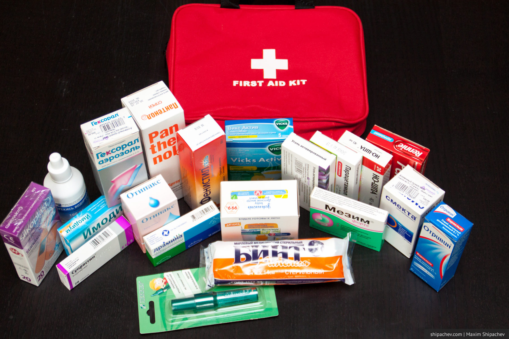
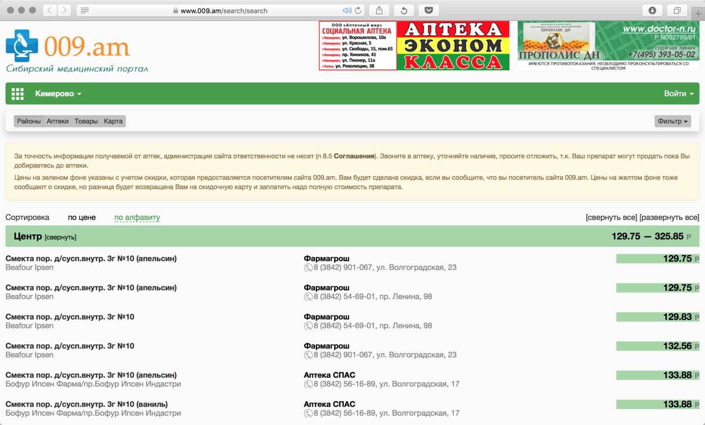
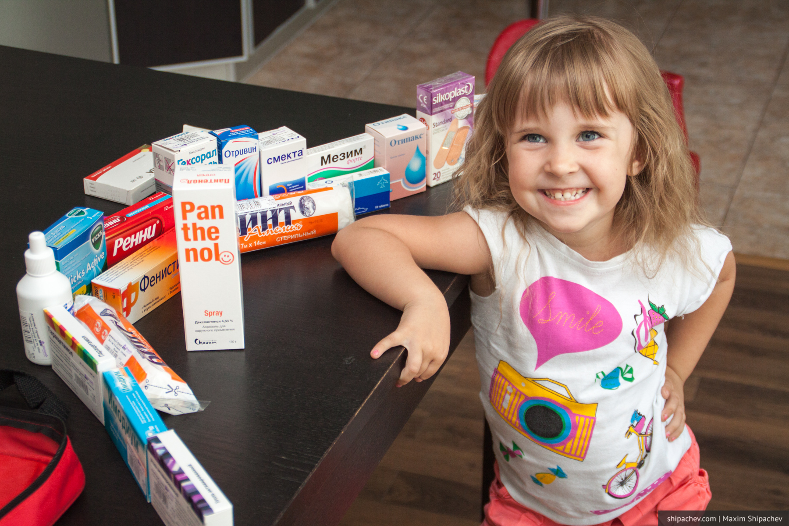

Если собираешься в путешествие, особенно с детьми, желательно иметь с собой запас медикаментов на разные случаи жизни. Современные автомобильные аптечки вопрос не решают никак. Скорее даже вредят. Пару недель назад я открыл свою, которую возил до этого три года. В ней оказался только лейкопластырь и два бинта.
Решено было собирать аптечку самостоятельно. На Алиэкспресс выбрал подходящую сумку, и, дождавшись её получения, отправился в аптеку.

Комплектовать аптечку «с нуля» удовольствие сегодня не из дешёвых. В то же время руководствоваться при выборе аптеки только словами «АПТЕКА СО СКЛАДА» тоже не хотелось. В Кемерове работает отличный сервис мониторинга цен на лекарства — 009.am. Именно там я проверил цены на пару-тройку самых ходовых медикаментов, и выбрал аптеку «Спас» на Волгоградской, 17.

Я не сторонник покупки так называемых «недорогих аналогов импортных лекарств». Даже, если активное вещество в таких лекарствах будет одним и тем же, всегда остаются вопросы по поводу качества этого вещества и отсутствия сопровождающих компонентов.
Список лекарств для аптечки
- Драмина
- Ацикловир
- Мезим
- Смекта
- Мотилиум
- Активированный уголь
- Но-шпа
- Супрастин
- Парацетамол
- Санорин
- Гексорал
- Нурофен
- Отипакс
- Фенистил гель
- Бинт стерильный
- Пластырь бактерицидный
- Перекись водорода
- Зеленка (карандаш)
- Пантенол (аэрозоль)
Этот набор обошёлся нам в 2689 рублей.

Кроме этого, в домашней аптечке после ревизии у нас оставались:
- Зовиракс
- Дентинокс (стоматологический гель)
- Клей БФ-6
- Тетрациклин
- Аскорил
- Банеоцин
То есть ещё, примерно, на 1000 рублей.
Итого стоимость аптечки для путешествий составила немногим больше 4000 рублей, включая стоимость самой сумки под лекарства.